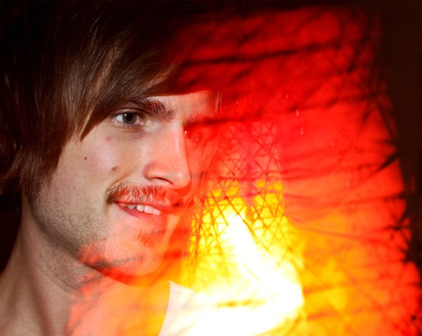
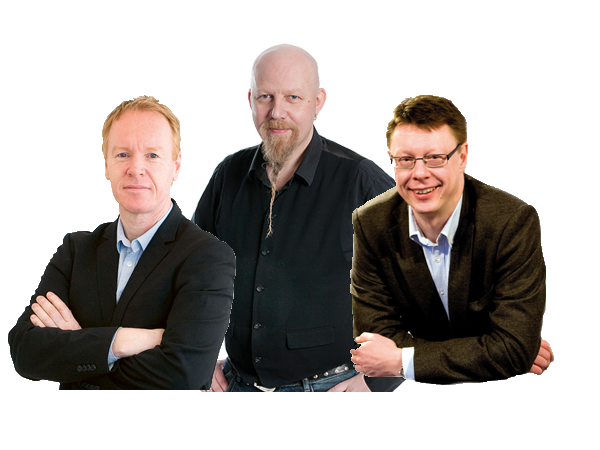

Ny teknik inom mediebranschen
Aftonbladet, VK och WordPress
Hej!
Roligt att få vara här
Vem är jag?

Vad gör jag?
!! bild här - vad?
Västerbottens-Kuriren
Aftonbladet
Kort bakgrund
One "ring" to rule them all
Osäkerhet kring Open Source
IE10-11 - klar förbättring
<3
Västerbottens-Kuriren
och WordPress

Nytt CMS
Open Source
WordPress

VKWP
Sporten
Norran
Dalademokraten
Aftonbladet
och WordPress

Bloggar
!! Någon bild här?
Granskningar
Appguiden
Facebook-appar
!! bild på Vilken hjälte är du
!! Bild från ?? Mandela?
Härligt Hemma
Politism
Kampanjsajter
!! Bild här - Hyundai admin
Strategi nya tekniker
Blir inte alltid som man tänkt sig
!! Bild politism?
Utvecklingsstrategigruppen
Labs Friday
Konferenser
Snabb sammanfattning
Vi springer för att stå still
WordPress har förändrat hur vi utvecklar
Omvärldsbevakning viktigt
Lära sig att lära
!Internet Explorer
Tack för mig!
christoffer.larsson@aftonbladet.se
@chredd